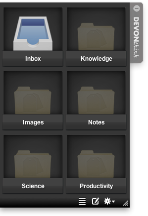

|
|
|
Sorter |
|
The Sorter is a helper application that lets you add files or selected text or images to your databases even when DEVONthink Pro Office is not open. It appears as a small ⇥ attached to the left, bottom, or right border of the screen that serves as a drop target for files and clippings.  Like a sorter in the post office, the DEVONthink Pro Office Sorter consists of multiple (drop) boxes. The first box is always the global inbox; all other boxes you can connect to any group in any of your databases. When you drop files or clippings onto a box, the Sorter files it in the connected group. Should the database containing the connected group not be available, e.g., because DEVONthink Pro Office is not open, the Sorter stores the dropped data until the database is opened, and then flushes the contents of the box. In addition, you can use the Sorter to quickly add a note to DEVONthink Pro Office even when it is not open. Positioning the panel To position the Sorter panel, drag the tab to any position along the left, bottom, or right borders of your desktop or laptop screen, except for the border where the Dock is located (even when it is hidden). To open the panel, click the tab; to close it, click the tab again. Resize the Sorter panel using the resize gadget in the lower left or lower right corner. (Note: The location of the resize gadget depends on whether the Sorter is attached to the left or right side of the screen.) The size of the boxes stays the same, but enlarging or reducing the panel size adds or hides boxes. Alternatively, you can show the Sorter with a list instead of square boxes. Use the and icons at the bottom to switch between the two. You can set different sizes for both modes. Connecting boxes To connect a box to a group, open the desired database and drag the group from the item list of a main window to an empty box in the Sorter. The box is labeled with the group's name, the group's icon is shown as a ghost image on the background of the Sorter box, and its tool tip (which appears when you point at it with the mouse for more than one second) shows the name of the database containing the database, as well as its path. Drag a box by its title to move it to a new position in the Sorter's box grid; move it out of the Sorter panel to remove its connection. Alternatively, use the contextual menu (opens when you right-click or click with ⌃ held) to open a window for the connected group in DEVONthink Pro Office or to remove the connection. Double-click a box to open the connected box in DEVONthink Pro Office. Using the panel To add items to a Sorter box, simply drag the file or clipping to the Sorter's tab. The panel extends automatically and you can drop the item on whichever box you choose. Dragging items to the Sorter copies them. Drag with ⌘ pressed to move the item; drag with ⌘ and ⌥ pressed to add only a reference of the item to DEVONthink Pro Office (index). For URLs dragged from a browser this creates a bookmark; hold ⌘ and ⌥ to create a web archive instead. Only files can be moved to the Sorter; folders and clippings are always copied. For items dragged from DEVONthink Pro Office, the Sorter behaves similar to the Groups & Tags panel. If the database the box is connected to is not available, the Sorter preserves the data for you. Move the mouse horizontally over the box to skim through the dropped items, just like in iPhoto "Events". Drag the shown item to the Trash to remove it. Alternatively, use the contextual menu to remove it. When a database is open, the Sorter files the contents of the box automatically and plays a sound to notify you. When the database is available, nothing shows up in the box because the Sorter sends all items directly to DEVONthink Pro Office and plays the notification sound. Adding notes Switch between the sorter boxes and the take note panel by clicking the icon located at the bottom of the Sorter panel. Click the or icon to switch back to the Sorter boxes. On the take note panel, choose the destination for the new note in the pop-up menu at the top of the panel. (DEVONthink Pro Office offers all groups available as sorter boxes) and enter title, URL, and your note. You can add tags at the bottom if desired and choose the desired format. The Sorter uses the standard font and size set in DEVONthink Pro Office's Preferences, Editing pane, for rich text. The text area also accepts drag-and-drop of plain and rich text clippings. Click the Save button to save the note. Action menu The Action menu located at the bottom of the Sorter panel offers some handy commands. Use the Action menu to open the Sorter's Preferences, flush all boxes (automatically opens DEVONthink Pro Office and all databases that are needed), or quit the Sorter. When the Sorter is closed, use the Preferences or the Dock menu to show it again. Hotkeys The Take Note and Copy Selection shortcut that you can set in the Sorter Preferences allow you to open the Sorter in take note mode or to capture a selection in another application and save it to the Sorter's inbox. The latter works in the same way as the Sorter's Send To Inbox command in the Services menu . Shortcuts
Troubleshooting Re-appears after log-in: If you have set the Sorter preferences so that it should not open automatically when you log-in but it still does so, open the System Preferences, Users section, Log-in Items tab. Remove the Sorter manually. Edit 'Hide' settings: If you accidently told the Sorter (not to) hide when an application goes to full-screen mode and now you want to change this behavior, do the following: First quit the Sorter, e.g., by using its action menu. Then, open the Terminal application (located in /Applications/Utilities) and copy the following line into a new window, followed by the ↩ key: defaults delete com.devon-technologies.think-sorter UserSpecifiedFullScreenApplications This makes the Sorter forget its hiding settings and you can set them anew. |